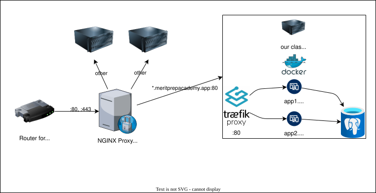

Deploy Part 1
Deploying has to do with taking your application from your computer, moving it to a server, and running it. A server is just a computer hooked up to the public internet. Here is a diagram describing how our class server network works.

Here is an explanation of the diagram from left to right.
- There is a single IP Address pointing to the location of the data center housing our class applications. A router has ports 80 and 443 open and directs that traffic to a proxy server.
- The proxy server has NGINX, with configurations to further connect domains to servers on the internal network. Here’s what the NGINX config is for our class.
NGINX Config for *.meritprepacademy.app
server {
listen 443 ssl;
server_name *.meritprepacademy.app;
# actual values redacted
# created with certbot for the wildcard domain
ssl_certificate /some/file/created/by/certbot;
ssl_certificate_key /some/other/file/created/by/certbot;
location / {
# actual internal ip address redacted
# forwards to a different server
proxy_pass http://0.0.0.0:80;
proxy_set_header Host $host;
proxy_set_header X-Real-IP $remote_addr;
proxy_set_header X-Forwarded-For $proxy_add_x_forwarded_for;
proxy_set_header X-Forwarded-Proto $scheme;
}
}
server {
listen 80;
server_name *.meritprepacademy.app;
return 301 https://$host$request_uri; # Redirect HTTP to HTTPS
}- The class server has everything managed by Docker. All incoming traffic goes through the traefik proxy which directs traffic to the applications on the server. Many applications connect to a Postgres database service.
Docker
Here’s a firehose explanation of Docker things.
Here are the five key concepts:
- Host: The physical computer running Docker.
- Image: A tiny OS with the minimal files needed to run a service (e.g. application, database, etc.)
- Container: A running copy of an image. Behaves like a mini-computer running a mini-OS (the image).
- Network: Docker can internally manage ports and connections so that the host doesn’t have to.
- Volume: Containers are ephemeral (temporary), and when they turn off, the data disappears. Volumes are a way to store data from a container on the host so it persists.
Install Docker
To install Docker and Docker Desktop, and look at tutorials, visit https://docs.docker.com/get-started/.
Dockerfile and Local Test
The first time we deploy our code, we will NOT have a persistent (long term) database. We will just take our development configuration with sqlite until we know our deployment works.
To specify what our Docker image needs to look like, we create a file called Dockerfile. The Dockerfile contains two stages, the first compiles our Go application and the second runs the application. This allows the second to be more minimal since it doesn’t have to worry about compilation.
# Stage 1: Builder
# Use golang to compile the app
FROM golang:1.24 AS builder
WORKDIR /app
COPY go.mod go.sum ./
RUN go mod download
# Copy the rest of the application code from host to image
COPY . .
# Compile
RUN CGO_ENABLED=1 GOOS=linux go build -o server .
# Stage 2: Runner
# Use a Debian-based image for better compatibility with CGO
FROM golang:1.24-trixie
# Install necessary packages for CGO and SQLite
RUN apt-get update && apt-get install -y --no-install-recommends \
libc6 \
libsqlite3-0 \
sqlite3 \
&& rm -rf /var/lib/apt/lists/*
WORKDIR /app
COPY --from=builder /app/server .
COPY --from=builder /app/static ./static/
COPY --from=builder /app/views ./views/
COPY --from=builder /app/conf/app.conf ./conf/
COPY .env .env
# Create user to run app so it's not run as root
RUN useradd appuser
# Change ownership of /app to appuser
RUN chown -R appuser:appuser /app
# Switch to appuser as the active user
USER appuser
# Command to run the application
CMD ["./server"]
# Expose the port the app runs on
EXPOSE 8080If you want to build your image locally and test it in a container, here is a little bash script for your terminal. Set the NAME to the name of your app (you’ll need it later, so don’t be silly).
NAME=myapp
docker build . -t $NAME
docker stop $NAME && docker rm $NAME
docker run -d \
--name $NAME \
-p 8080:8080 \
$NAMEThen you can check http://localhost:8080 in your browser or with a tool like curl to see if it works.
curl -v http://localhost:8080If you need to try again after making changes, just run the above bash script with docker build, etc. again.
Deploy to Server
DNS
Make a request to your teacher to create a DNS record for your app. Example: A myapp.meritprepacademy.app 0.0.0.0.
Docker Compose
Docker Compose is a way to configure and manage containers. Create a file called docker-compose.yaml with the following. Change myapp to be the name of your app.
To try running this file locally, you’ll need to create two Docker networks.
docker network create pg
docker network create traefiknetworks:
# these are for connecting with postgres and traefik later
pg:
driver: bridge
external: true
traefik:
driver: bridge
external: true
services:
myapp:
container_name: myapp
image: myapp
restart: unless-stopped
networks:
- traefik
- pg
labels:
# this is so the traefik proxy connects your domain to your app
- "traefik.enable=true"
- "traefik.docker.network=traefik"
- "traefik.http.routers.myapp.rule=Host(`myapp.meritprepacademy.app`)"
- "traefik.http.routers.myapp.entrypoints=web"
- "traefik.http.services.myapp.loadbalancer.server.port=8080"Deploy
Make a script file called deploy.sh. This a script you can run to deploy to the server using Docker and FTP!
NAME=myapp
SSH_DEST=buckley
docker build . -t $NAME
# Save the image as an archive
docker save -o $NAME.tar $NAME
# The << marker followed by the name (EOF) tells the script to pass the following lines until the name is found at the beginning of the line (by itself).
sftp $SSH_DEST <<EOF
put $(pwd)/$NAME.tar
put $(pwd)/docker-compose.yaml
put $(pwd)/.env .env
exit
EOF
# ssh load image and stop existing containers
ssh $SSH_DEST "docker load -i $NAME.tar && docker stop $NAME && docker rm $NAME"
# ssh run service
ssh $SSH_DEST "docker compose up -d" Run the script on your machine. Later, we will automatically run a deploy script via GitHub CI. Check to see if your site is up with a browser or curl.
sh deploy.shIf you have an issue, you can check logs on the server like this:
# make sure SSH_DEST is set to something
ssh $SSH_DEST
docker logs myapp